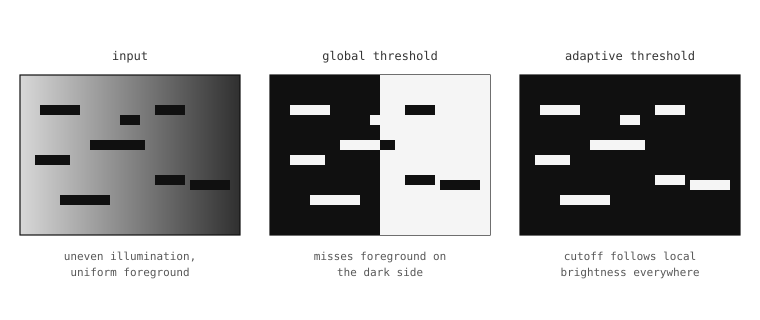

5.13. Doğrusal ve komşuluk filtreleri¶
Bölümün başındaki piksel-matematik işlemleri iki görüntüyü nokta nokta birleştiriyordu. Filtreler ise ilgili işi farklı bir biçimde yapar: her çıkış pikselinin değerini, karşılık gelen konumu çevreleyen küçük bir giriş piksel komşuluğundan hesaplar. (x, y) konumundaki çıkış, (x, y) etrafında ortalanmış küçük bir kutu içindeki giriş piksellerinin bir istatistiğidir – ortalaması, ortancası ya da en sık görülen değeri.
Bu küçük çerçeveleme değişikliği – tek seferde bir pikselden tek seferde bir piksel penceresine geçmek – bütün bir yararlı işlemler ailesini çalışır hale getiren şeydir. Küçük bir pencere üzerindeki basit bir ortalama, sensör gürültüsünü düzleştirir. Aynı pencere üzerindeki ortanca, kenarları o kadar yumuşatmadan tek piksellik benekleri kaldırır. İki yönlü bir ortalama, güçlü kontrast sınırları boyunca düzleştirme yapmayı reddederek nesnelerin kenarlarını korurken içlerindeki dokuları temizler. Komşuluk iş birimidir; istatistik seçimi ise filtrenin ne yapacağına karar verir.
5.13.1. Çekirdek boyutu¶
Her komşuluk filtresi, pencerenin yarıçapını piksel cinsinden belirleyen bir size parametresi alır. Pencerenin kendisi karedir ve her kenarda (2 * size + 1) piksel kaplar – yani size=1 bir 3’e 3 komşuluk, size=2 5’e 5, size=3 7’ye 7 anlamına gelir ve böyle devam eder.

Komşuluk, görüntü boyunca sol üstten sağ alta doğru tek seferde bir piksel kayar. Her çıkış pikseli, üzerinde ortalanmış giriş komşuluğuna filtrenin istatistiğinin uygulanması sonucudur.¶
Daha büyük boyutlar daha büyük komşuluklar, bu da daha pürüzsüz (veya daha agresif) filtreleme anlamına gelir. Maliyet pencerenin alanıyla birlikte artar, dolayısıyla bir size=3 filtresi piksel başına bir size=1 filtresinin yaptığının yaklaşık dokuz katı kadar iş yapar. Çoğu temizleme işi için pratik varsayılan size=1 veya size=2‘dir; uygulamanın bastırmaya çalıştığı özniteliği bastırmak için küçük komşuluklar yeterli olmadığında daha büyük boyutlara başvurun.
5.13.2. Ortalama filtresi¶
mean() her pikseli, komşuluğunun aritmetik ortalamasıyla değiştirir. Sonuç, pencere boyutu üzerinde pikselden piksele değişimi düzleştirir, bu da onu sensör gürültüsü beneklerini bastırmanın en ucuz yolu yapar: yüksek frekanslı değişim ortalamayla sönümlenir, düşük frekanslı içerik ise hayatta kalır.
Bunun bedeli, kenarların ve diğer keskin özniteliklerin de ortalamaya alınmasıdır. Filtreden önce tek piksel genişliğindeki parlak bir kenar, size=1 ortalama filtresinden sonra iki veya üç piksel genişliğine gelir ve parlaklık kenarlarda azalarak iner. Doku açısından fakir bir görüntüde (temiz bir duvar, renkli bir markörün içi) salt gürültü azaltma için bu takas uygundur. Kenarların önem taşıdığı yoğun bir sahnede ise genellikle aşağıdaki filtrelerden biri daha uygun olur.
img.mean(1) # 3x3 box average -- fast, gentle smoothing
img.mean(2) # 5x5 box average -- stronger, slower
5.13.3. Ortanca, mod, orta nokta¶
Diğer üç istatistiksel komşuluk filtresi, basit aritmetik ortalamayı aykırı değerlere karşı daha gürbüz bir şeyle takas eder.
median() komşuluğun ortancasını döndürür – sıralanmış pencere pikselleri listesinin ortasına düşen değer. Penceredeki tek bir çok parlak veya çok karanlık piksel ortancayı çekmez; sadece atılan uç değerlerden biri olur. Pratik etki, ortanca filtrelemenin tek piksellik benekleri ve tuz-biber gürültüsünü, mean filtresinin yaptığı gibi kenarları yumuşatmadan kaldırmasıdır. Bedeli, piksel başına daha fazla hesaplama olmasıdır – bir pencereyi sıralamak ortalama almaktan daha yavaştır – ve sonuç tam olarak bir ortalama değildir, bu da bazen sonraki matematik işlemleri için önem taşır.
Bir percentile parametresi (varsayılan 0.5) seçilen değeri tam ortancadan kaydırır. percentile=0.0 komşuluğun minimumunu döndürür, percentile=1.0 maksimumunu; ara değerler ise sıralanmış pencerede ikisi arasında orantılı olarak seçim yapar. Bu, median filtresine, sıralı istatistiğin aykırı-değer gürbüzlüğünü kaybetmeden komşuluğun karanlık veya parlak kısımlarını vurgulama yeteneği kazandırır.
mode() komşuluktaki en sık görülen değeri döndürür. Gürültü modelinin “piksellerin çoğu doğru, birkaçı çeşitli derecelerde bozulmuş” olduğu, doğru cevabın en sık görünen değer olduğu durumlarda yararlıdır – bozulan değerler sıralanmış pencerenin bir tarafında biriktiğinde ortanca bunu kaçırabilir.
midpoint() komşuluğun minimumu ile maksimumunun ağırlıklı bir bileşimini döndürür – bias=0.5 ikisi arasındaki orta noktayı verir, bias=0.0 minimumu, bias=1.0 maksimumu verir. Diğerlerine göre daha az kullanılır, ancak amaç özellikle karanlık veya parlak öznitelikleri çıkarmak olduğunda bilinmeye değerdir.
5.13.4. İki yönlü filtre, kenar koruyan sürüm¶
bilateral() iyi anlaşılmaya en değer komşuluk filtresidir. mean() filtresinin düzleştirme etkisini üretir, ancak fazladan bir kısıtla: bir komşuluk pikseli merkez pikselden ne kadar çok farklıysa, ortalamada o kadar az sayılır. Sonuç, her tekdüze bölgenin içini, onları ayıran kenarlara taşmadan düzleştirir, ki bu tam olarak çoğu uygulamanın aslında istediği şeydir.
Filtrenin pikselleri ne kadar agresif şekilde göz ardı edeceğini iki parametre kontrol eder:
color_sigma, renk farkının ağırlıklandırmayı nasıl etkilediğine karar verir. Daha küçük değerler, filtrenin merkezden farklı olan pikselleri göz ardı etme konusunda daha katı olduğu anlamına gelir.space_sigma, uzamsal mesafenin ağırlıklandırmayı nasıl etkilediğine karar verir. Daha küçük değerler merkeze yakın piksellere daha fazla ağırlık verir.
Varsayılanlar (color_sigma=0.1, space_sigma=1.0) makul başlangıç noktalarıdır; bunları ayarlamak genellikle filtreyi örnek bir çerçevede çalıştırma ve kenarlar net, iç bölgeler temiz olana kadar değiştirme meselesidir.
İki yönlü filtre, median() filtresinden daha pahalı ve mean() filtresinden önemli ölçüde daha pahalıdır, bu nedenle yalnızca kenar koruyan davranışın uygulamanın ihtiyaç duyduğu şey olduğu durumlarda sadece ona başvurmaya değer.
5.13.5. Uyarlamalı eşikleme¶
Ortalama, ortanca, mod ve orta nokta filtrelerinin tümü, çıkışlarını ikili bir eşiğe dönüştüren aynı anahtar kelime argümanı çiftini taşır:
threshold=Truefiltreyi eşikleme moduna geçirir.offset=Nkarşılaştırmadan önce yerel kesim eşiğiniNbirim kaydırır.
Mekanizma doğrudan filtrenin olağan davranışı üzerine inşa edilir. threshold=True olmadan, filtre istatistiğini komşuluk üzerinde hesaplar ve bu istatistiği çıkış pikseline yazar. threshold=True ile, filtre aynı istatistiği hesaplar, ardından aynı konumdaki kaynak pikseli istatistik artı ofsetle karşılaştırır ve kaynak büyükse formatın maksimum değerini, aksi takdirde sıfır yazar.
Sonuç, kesim eşiği çerçeve boyunca yerel parlaklıkla birlikte hareket eden ikili bir görüntüdür. Parlak bölgeler yüksek bir kesim eşiği, sönük bölgeler düşük bir kesim eşiği alır ve komşularından yerel olarak daha parlak olan bir ön plan pikseli, ister parlak ister sönük bir bölgede otursun eşleşir – ki bu tam olarak tek bir küresel eşiğin eşit aydınlatılmamış bir görüntüde üretemeyeceği davranıştır.
img.mean(3, threshold=True, offset=5)
offset parametresi, uygulamanın testin ne kadar katı olduğunu kontrol ettiği yerdir. Küçük bir pozitif ofset, kaynak pikselin eşleşme sayılmadan önce komşularından ölçülebilir biçimde daha parlak olmasını gerektirir, bu da sönük ön planı kaçırma pahasına sensör gürültüsü yanlış pozitiflerini bastırır. Küçük bir negatif ofset, biraz gürültünün geçmesine izin verme pahasına sönük ön planı yakalar. Seçim, hattın geri kalanının ikili çıkışla ne yapacağına bağlıdır.

Eşit olmayan aydınlatma altında, tek bir küresel eşik ön planı her konumda tanımlayamaz. threshold=True ile çalıştırılan bir komşuluk filtresi, yerel parlaklıkla birlikte hareket eden ve ön planı tüm çerçeve boyunca doğru sınıflandıran bir kesim eşiği üretir.¶
Filtre ailesi uyarlamalı eşiği çalıştırır, bu yüzden doğru filtreyi seçmek önemlidir: en ucuz uyarlamalı eşik için mean(), giriş, filtrenin yerel kesim eşiğini hesaplamadan önce reddetmesi gereken tuz-biber gürültüsü içerdiğinde median().